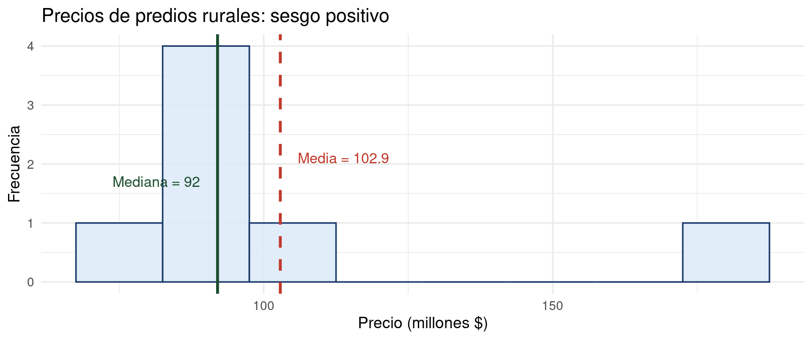
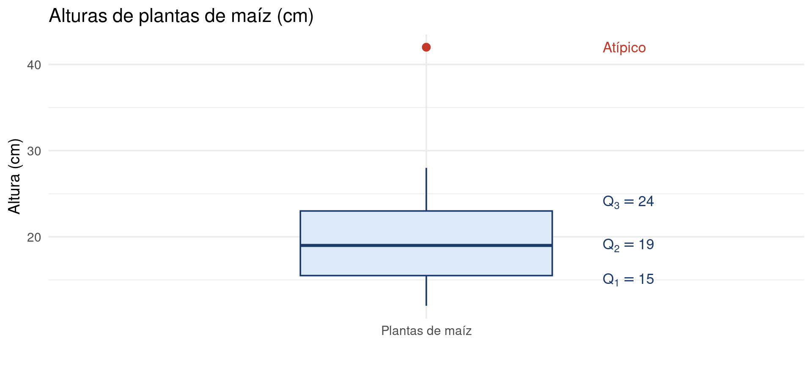

Bioestadística Fundamental
Departamento de Estadı́stica, Sede Bogotá
Clase 4
Medidas de Dispersión
y Medidas de Posición
Variabilidad, forma y localización en conjuntos de datos
Bioestadística Fundamental — Departamento de Estadística, UNAL Bogotá
En la clase pasada hablamos de:
Comparación de cantidades
- Tasas: relacionar magnitudes con unidades distintas.
- Razones: comparar dos cantidades de la misma clase.
- Proporciones: igualdad entre razones.
- Proporción estadística y porcentaje.
Medidas de tendencia central
- Media aritmética: el promedio.
- Mediana: el valor central.
- Moda: el valor más frecuente.
- ¿Cuándo usar cada medida?
En esta clase vamos a hablar de:
Parte I: Dispersión y forma
- Rango.
- Varianza y desviación estándar.
- Coeficiente de variación.
- Asimetría y curtosis.
Parte II: Posición
- Cuartiles y rango intercuartílico.
- Datos atípicos: detección y tratamiento.
- Gráfico de caja y bigotes.
- Deciles y percentiles.
Parte I
Medidas de Dispersión y Forma
Cuantificando la variabilidad y la forma de la distribución
Medidas de dispersión
Las medidas de dispersión son herramientas estadísticas que permiten cuantificar el grado de variabilidad de un conjunto de datos con respecto a un valor central, generalmente la media.
- Muestran qué tan dispersos están los datos.
- Permiten comparar diferentes conjuntos de datos.
- Ayudan a detectar valores atípicos (outliers).
- Apoyar procesos de análisis, inferencia y toma de decisiones.
Rango
El rango es la medida de dispersión más sencilla y se define como la diferencia entre el valor máximo y el valor mínimo de un conjunto de datos.
- Permite identificar la amplitud total de los datos.
- No proporciona información sobre la distribución interna de los valores.
Varianza
La varianza es una medida de dispersión que cuantifica el promedio de los cuadrados de las diferencias entre cada dato y la media del conjunto.
- Permite evaluar qué tan alejados se encuentran los datos respecto al valor promedio.
- El uso del cuadrado evita que las diferencias negativas y positivas se cancelen entre sí.
Tipos de varianza
Varianza poblacional \(\sigma^2\)
- Fórmula:
- \[\sigma^2 = \frac{\sum_{i=1}^{N}(x_i - \mu)^2}{N}\] Donde:
- \(\mu\): es la media poblacional.
- \(N\): es el tamaño de la población.
Varianza muestral \(s^2\)
- Fórmula:
- \[s^2 = \frac{\sum_{i=1}^{n}(x_i - \bar{x})^2}{n-1}\] Donde:
- \(\bar{x}\): es la media muestral.
- \(n\): es el tamaño de la muestra.
- La corrección \((n - 1)\) es un ajuste que mejora la estimación de la población.
Varianza para datos agrupados
En datos agrupados, la varianza se calcula utilizando las marcas de clase o valores de los \(x_i\) agrupados y sus respectivas frecuencias.
- La dispersión se mide considerando la distancia de cada marca de clase respecto a la media, ponderada por su frecuencia.
- El total de datos se obtiene como la suma de las frecuencias.
Varianza poblacional
- \[\sigma^2 = \frac{\sum_{i=1}^{k}f_i(x_i - \mu)^2}{N}\]
Varianza muestral
Donde \(x_i\) es marca de clase o valor de la categoría, \(f_i\) es frecuencia en el intervalo o el valor de \(x_i\), \(k\) es número de clases o intervalos, \(N=\sum_{i=1}^{k} f_i\) es el total de datos poblacionales y \(n=\sum_{i=1}^{k} f_i\) es el total de datos muestrales.
Desviación Estándar
La desviación estándar es una medida de dispersión que representa la raíz cuadrada de la varianza y cuantifica el grado de alejamiento promedio de los datos respecto a la media.
- Permite evaluar cómo se distribuyen los datos alrededor del valor central.
- Se expresa en las mismas unidades que los datos originales, lo que facilita su interpretación.
Poblacional
\[\sigma=\sqrt{\sigma^2}\]
Muestral
\[s=\sqrt{s^2}\]
Ejemplo 1: datos poblacionales no agrupados
Se tienen los siguientes datos: 10, 12, 13, 16, 9, 8, 12, 8, 6, 16, 7, 9. Partiendo de que son de una población, hallemos el rango, varianza y desviación estándar:
- \(Rango: Máximo - Mínimo = 16-6=10\)
- Para hallar la varianza se debe primero hallar la media aritmética, en este caso \(N=12\).
- \(Media: \mu= \frac{\sum_{i=1}^{12}x_i}{12}=\frac{10+12+13+......+7+9}{12}=\frac{126}{12}=10,5\)
- Con el valor de la media \(\mu=10,5\) se procede a hallar la varianza.
- \(Varianza: \sigma^2 = \frac{\sum_{i=1}^{12}(x_i - 10,5)^2}{12} \\=\frac{( 10 - 10,5)^2}{12}+\frac{(12 - 10,5)^2}{12}+...+\frac{( 9- 10,5)^2}{12} \\=\frac{121}{12}=10,083\)
- Se tiene que \(\sigma^2=10,083\)
- Por lo tanto la desviación estándar es:
- \(\sigma=\sqrt{\sigma^2}=\sqrt{10,083}=3,175\)
Los datos se desvían en promedio de su media 3,175 unidades.
Ejemplo 2: datos muestrales no agrupados
Se tomó una muestra de plantas de un cultivo para medir su altura (cm). Los datos registrados son: 12, 15, 14, 10, 9, 13, 11, vamos a hallar la varianza y la desviación estándar muestrales:
- Hallamos la media aritmética, en este caso con \(n=7\).
- \(Media: \bar{x}= \frac{\sum_{i=1}^{7}x_i}{7}=\frac{12+15+14+10+9+13+11}{7}=\frac{84}{7}=12\)
- Con el valor de la media \(\bar{x}=12\) se procede a hallar la varianza.
- \(Varianza: s^2 = \frac{\sum_{i=1}^{7}(x_i - 12)^2}{(7-1)} \\=\frac{( 12 - 12)^2}{6}+\frac{(15 - 12)^2}{6}+...+\frac{( 11- 12)^2}{6} \\=\frac{28}{6}=4,67\)
- Por lo tanto la desviación estándar es:
- \(s=\sqrt{s^2}=\sqrt{4,67}=2,16\)
Tenemos que los datos se desvían en promedio 2,16 unidades.
Ejemplo 3: varianza con datos agrupados
- Se registraron las edades de personas en años en una comunidad rural.
- Los datos resultados fueron recopilados en la siguiente tabla:
-
Intervalo \(x_i\) \(f_i\) 10–19 14.5 5 19–28 23.5 11 28–37 32.5 8 37–46 41.5 5 46–55 50.5 8 55–64 59.5 6 64–73 68.5 7 Total - 50
Con estos datos vamos hallar la varianza y la desviación estándar, asumiendo datos muestrales y poblacionales.
- Completamos la tabla de frecuencias para calcular los estadísticos que se requieren.
-
Para la media:
- Producto entre las frecuencias absolutas y marcas de clase \(f_i\cdot x_i\)
-
Para la varianza:
- \((x_i - \bar{x})\)
- \((x_i - \bar{x})^2\)
- \(f_i\cdot (x_i - \bar{x})^2\)
Ejemplo 3: solución
- Tabla de frecuencias completa
-
Intervalo \(x_i\) \(f_i\) \((f_i\cdot x_i)\) \((x_i - \bar{x})\) \((x_i - \bar{x})^2\) \(f_i\cdot (x_i - \bar{x})^2\) 10–19 14,5 5 72,5 -26,28 690,64 3.453,20 19–28 23,5 11 258,5 -17,28 298,60 3.284,60 28–37 32,5 8 260,0 -8,28 68,57 548,56 37–46 41,5 5 207,5 0,72 0,52 2,60 46–55 50,5 8 404,0 9,72 94,53 756,24 55–64 59,5 6 357,0 18,72 350,44 2.102,64 64–73 68,5 7 479,5 27,72 768,40 5.378,80 Total - 50 2.039 - - 15.526,64 - Con la tabla de frecuencias se procede a hacer los cálculos.
- Media: \(\bar{x}= \frac{\sum_{i=1}^{7}f_ix_i}{50}=\frac{2.039}{50}=40,78\)
- El promedio de edad de la comunidad es aproximadamente 41 años.
- Varianza y desviación estándar muestral
- Para la varianza muestral aplicamos la siguiente fórmula:
- \(s^2 = \frac{\sum_{i=1}^{k} f_i(x_i- \bar{x})^2}{n - 1}\)
- \(s^2 = \frac{\sum_{i=1}^{7} f_i(x_i- \bar{x})^2}{(50 - 1)}=\frac{15.526,64}{49}=316,87\)
- Con la varianza se procede a hallar la desviación estándar.
- \(s=\sqrt{s^2}=\sqrt{316,87}=17,8\)
- Si los datos fueran poblacionales?
- Varianza Poblacional: se calcula con la siguiente fórmula:
- \(\sigma^2 = \frac{\sum_{i=1}^{k} f_i(x_i- \bar{x})^2}{N}\)
- Reemplazando con los datos de la tabla:
- \(\sigma^2 = \frac{\sum_{i=1}^{7} f_i(x_i- \bar{x})^2}{50}=\frac{15.526,64}{50}=310,533\)
- Con la varianza se calcula la desviación estándar
- \(\sigma=\sqrt{\sigma^2}=\sqrt{310,533}=17,62\)
Coeficiente de variación
- El coeficiente de variación es una medida relativa de dispersión que expresa la desviación estándar en relación con la media.
- Permite comparar la variabilidad entre diferentes conjuntos de datos, incluso cuando presentan distintas unidades o escalas.
- Se expresa generalmente en porcentaje, lo que facilita su interpretación.
- Se calcula como:
- El coeficiente de variación es útil para comparar la dispersión de diferentes conjuntos de datos que pueden tener diferentes unidades o escalas.
Para la poblacion: \(CV = \frac{\sigma}{\left| \mu \right|} \times 100\%\)
Para la muestra: \(CV = \frac{s}{\left| \bar{x} \right|} \times 100\%\)
Interpretación del coeficiente de variación
- CV bajo → alta homogeneidad (datos consistentes)
- CV alto → alta variabilidad (datos dispersos)
- Permite evaluar la estabilidad de un proceso o fenómeno.
- Una alta variabilidad hace que los sean más dispersos. Esto significa que los datos están más separados entre sí, lo que puede indicar que no hay una tendencia clara o que los datos pueden ser más difíciles de predecir, mientras que una menor variabilidad hace que los datos sean mas confiables y menos complejos para predecir.
- Valores de referencia:
- CV < 10% → Muy homogéneo
- 10% – 20% → Homogeneidad moderada
- 20% – 30% → Variabilidad considerable
- CV > 30% → Alta variabilidad
Ejemplo 1
CV para un solo conjunto de datos muestrales
- Se analiza la producción de maíz en una parcela.
- Datos ya calculados:
- Media: \(\bar{x} = 10,8 kg\)
- Desviación estándar: \(s = 1,40 kg\)
- Halle el CV e interprete.
- \(CV=\frac{s}{|\bar{x}|}\cdot 100\%=\frac{1,40}{|10,8|}\cdot 100\%=\frac{1,40}{10,8}\cdot 100\%=12,96\%\)
- \(CV=12,96\%\), el coeficiente de variación indica una homogeneidad moderada, lo que sugiere que el cultivo presenta un comportamiento uniforme.
CV para un solo conjunto de datos poblacionales
- Se registran las calificaciones finales de todos los estudiantes de un curso (escala 0–100).
- Datos ya calculados:
- Media: \(\mu = 70\)
- Desviación: \(\sigma= 13,1\)
- Halle el CV e interprete.
- \(CV=\frac{\sigma}{|\mu|}\cdot 100\%=\frac{13,1}{|70|}\cdot 100\%=18,71\%\)
- \(CV=18,71\%\), el coeficiente de variación indica una homogeneidad moderada, el desempeño de todo el curso es estable.
Ejemplo 2
CV para comparación de muestras
- Se comparan los tiempos de entrega (minutos) de dos empresas de mensajería, de cada empresa se tomó una muestra de datos.
- Determinar cual de las dos empresas es mejor usando el coeficiente de variación.
- Empresa A
- Datos:
- Media: \(\bar{x}_A=20\,minutos\)
- Desviación Estandar: \(s_A=1,58\)
- Empresa B
- Datos:
- Media: \(\bar{x}_B=38\,minutos\)
- Desviación Estandar: \(s_B=10,37\)
- Se procede a hallar los dos coeficientes de variación, no es necesario colocar valor absoluto ya que ambas medias son positivas.
- \(CV_A=\frac{s_A}{\bar{x}_A}\cdot 100\%=\frac{1,58}{20}\cdot 100\%=7,9\%\)
- \(CV_B=\frac{s_B}{\bar{x}_B}\cdot 100\%=\frac{10,37}{38}\cdot 100\%=27,29\%\)
- Comparando los dos CV, se tiene que:
- La empresa A es preferible porque no solo presenta menor tiempo promedio de entrega, sino también menor variabilidad, lo que garantiza un servicio más rápido y consistente.
Forma de la distribución
- Dos propiedades clave:
- Asimetría (sesgo): grado de desviación respecto a la simetría.
- Curtosis: grado de concentración alrededor de la media (altura o achatamiento de la curva).
Conocer la forma es esencial antes de aplicar pruebas estadísticas paramétricas, que suponen distribución normal.
Asimetría: concepto y tipos
- La asimetría (o sesgo) mide el grado de desviación de una distribución respecto a la simetría perfecta.
- Una distribución es simétrica cuando los datos se distribuyen de forma equilibrada a ambos lados de la media: \(\bar{x} = Me = Mo\).
- El sesgo puede ser positivo (cola a la derecha) o negativo (cola a la izquierda).
- Tipos (coeficiente \(g_1\)):
- Simétrica (\(g_1 \approx 0\)): \(\bar{x} \approx Me \approx Mo\). Datos concentrados al centro.
- Sesgo positivo (\(g_1 > 0\)): cola derecha larga. \(\bar{x} > Me > Mo\). Pocos valores extremos altos arrastran la media.
- Sesgo negativo (\(g_1 < 0\)): cola izquierda larga. \(\bar{x} < Me < Mo\). Pocos valores extremos bajos arrastran la media.
con \[g_1 = \frac{1}{n} \sum_{i=1}^{n} \left( \frac{x_i - \bar{x}}{s} \right)^3\]
Coeficiente de asimetría de Pearson
- Interpretación:
- \(A_p \approx 0\): distribución simétrica.
- \(A_p > 0\): sesgo a la derecha. Valores extremos altos alejan la media de la mediana.
- \(A_p < 0\): sesgo a la izquierda. Valores extremos bajos arrastran la media.
- Se acepta simetría práctica cuando \(|A_p| < 0{,}5\).
Coeficiente de asimetría momentual
- Ventajas y valores:
- Más preciso que el coeficiente de Pearson: captura la forma exacta mediante potencias cúbicas.
- \(g_1 = 0\): simetría perfecta.
- \(g_1 > 0\): sesgo positivo (cola derecha).
- \(g_1 < 0\): sesgo negativo (cola izquierda).
- Es el coeficiente que calculan R, Python y SPSS por defecto.
Ejemplo: coeficiente de asimetría
- Los precios (millones $) de 7 predios rurales son: 80, 85, 90, 92, 95, 98, 180
- \(\bar{x} = 102{,}9\) \(Me = 92\) \(s = 34{,}4\)
- Coeficiente de Pearson (con mediana):
- \(A_p = \dfrac{3(\bar{x} - Me)}{s} = \dfrac{3(102{,}9 - 92)}{34{,}4} \approx \mathbf{0{,}95}\)
- Interpretación:
- \(A_p \approx 0{,}95 > 0\): la distribución tiene sesgo positivo (asimétrica a la derecha).
- La cola derecha es larga, causada por el predio de \(180\) millones, que arrastra la media hacia arriba.
- La mediana (\(92\)) es más representativa que la media (\(102{,}9\)).
- Regla: \(\bar{x} > Me > Mo\) en distribuciones con sesgo positivo.
Curtosis: concepto y tipos
- La curtosis mide el grado de concentración de los datos alrededor de la media: qué tan puntiaguda o plana es la distribución comparada con la normal.
- Una curtosis alta indica que los datos se concentran mucho en el centro con colas pesadas; una curtosis baja indica una distribución más uniforme.
- Tipos (exceso de curtosis \(g_2\)):
- Mesocúrtica (\(g_2 = 0\)): igual que la distribución normal. Referencia base.
- Leptocúrtica (\(g_2 > 0\)): más apuntada que la normal; colas más pesadas. Datos muy concentrados al centro con valores extremos frecuentes.
- Platicúrtica (\(g_2 < 0\)): más plana que la normal; colas ligeras. Datos dispersos uniformemente.
Coeficiente de curtosis
- Interpretación del exceso de curtosis (\(g_2\)):
- \(g_2 = 0\): mesocúrtica (igual que la normal).
- \(g_2 > 0\): leptocúrtica. Pico pronunciado, colas pesadas.
- \(g_2 < 0\): platicúrtica. Distribución aplanada, colas ligeras.
-
En R:
e1071::kurtosis(x)devuelve \(g_2\) (exceso);moments::kurtosis(x)devuelve \(g_2 + 3\).
Asimetría y curtosis en R

Asimetría, curtosis y normalidad
- Una distribución normal tiene \(g_1 = 0\) y \(g_2 = 0\): perfectamente simétrica y mesocúrtica.
- Verificar \(g_1\) y \(g_2\) es el primer paso antes de aplicar pruebas paramétricas (t, ANOVA, regresión).
- Criterio práctico: si \(|g_1| < 2\) y \(|g_2| < 7\), la distribución se puede tratar como aproximadamente normal para muestras grandes.
| Estadístico | Normal | Sesgo positivo | Sesgo negativo |
|---|---|---|---|
| \(g_1\) | \(\approx 0\) | \(> 0\) | \(< 0\) |
| Media vs. mediana | \(\bar{x} = Me\) | \(\bar{x} > Me\) | \(\bar{x} < Me\) |
| Cola larga | ninguna | derecha | izquierda |
| \(g_2\) | \(\approx 0\) | independiente de \(g_1\) | |
Parte II
Medidas de Posición
Cuartiles, deciles, percentiles y datos atípicos
Medidas de posición
- Las medidas de posición son estadísticos que permiten dividir un conjunto de datos ordenados en partes iguales.
- Indican la ubicación relativa de los datos dentro de la distribución.
- Permiten analizar cómo se distribuyen los valores en diferentes niveles.
- Se basan en:
- Ordenamiento de los datos.
- División en partes iguales.
- Interpretación porcentual.
- ¿Para qué sirven?
- Identificar la posición relativa de un dato.
- Analizar la distribución de los datos.
- Comparar conjuntos de datos.
- Detectar concentración y dispersión.
- Apoyar la toma de decisiones.
- Las medidas de posición mas conocidas son:
-
- Cuartiles.
-
- Deciles.
-
- Percentiles.
1. Cuartiles
- Los cuartiles son medidas de posición que dividen un conjunto de datos ordenados en cuatro partes iguales.
- Cada cuartil representa el 25% de la distribución total, permitiendo analizar cómo se concentran los datos en distintos niveles.
- Se utilizan para describir la distribución, identificar la dispersión de los datos y detectar posibles asimetrías.
- Q1 (primer cuartil): deja por debajo el 25% de los datos.
- Q2 (segundo cuartil): corresponde a la mediana (50%).
- Q3 (tercer cuartil): deja por debajo el 75% de los datos.
- Son fundamentales en la construcción del gráfico de caja y bigotes.
Fórmulas
Cuartiles (datos no agrupados)
- Primero se deben ordenar los datos de menor a mayor.
- Se calcula la posición del cuartil.
- Se identifica el valor correspondiente.
- \(k = 1,2,3\)
- \(n\): número de datos
- Si la posición no es entera, se interpola.
\(Q_k = \frac{k(n+1)}{4}\)
Cuartiles (datos agrupados)
- Primero se calcula el valor \(\frac{kN}{4}\) y se busca en las frecuencias acumuladas de la tabla. Donde: \(N\)= numero de datos y \(k=1, 2, 3.\)
- Fórmula: \[Q_k = L_i + \left(\frac{\frac{kN}{4} - F_{i-1}}{f_i}\right) A\]
-
Donde:
- \(L_i\): límite inferior de la clase del cuartil.
- \(N\): total de datos.
- \(F_{i-1}\): frecuencia acumulada anterior.
- \(f_i\): frecuencia de la clase.
- \(A\): amplitud del intervalo.
Ejemplos
Datos sin agrupar
Se tienen los siguientes datos: 6, 10, 12, 3, 5, 14, 15, 17, 18, 7, 8, 9, 20, 21, 22. Vamos hallar los cuartiles del anterior conjunto de datos.
- Primero se ordenan los datos en orden ascendente: 3, 5, 6, 7, 8, 9, 10, 12, 14, 15, 17, 18, 20, 21, 22
- Aplicamos la formula: \[Q_k = \frac{k(n+1)}{4}\]
- Para el cuartil 1 se tiene que \(n=15\) y \(k=1\) , reemplazando se tiene que: \[Q_1 = \frac{1\cdot (15+1)}{4}=\frac{16}{4}=4\]
- Con \(Q_1=4\) se busca el valor correspondiente a la posición 4 en los datos ordenados. El valor que corresponde a esa posición es: \(x_4 = 7\) y por lo tanto el \(Q_1=7\).
-
Ahora para el cuartil 2 (mediana)
- \(n=15\) y \(k=2\) , Reemplazando:
- \(Q_2 = \frac{2\cdot (15+1)}{4}=\frac{2\cdot (16)}{4}=\frac{32}{4}=8\)
- \(Q_2=8\), el dato correspondiente a la posición 8 es: \(x_8=12\) y por lo tanto el \(Q_2=12\).
-
Ahora para el cuartil 3
- \(n=15\) y \(k=3\) , Reemplazando:
- \(Q_3 = \frac{3\cdot (15+1)}{4}=\frac{3\cdot (16)}{4}=\frac{48}{4}=12\)
- \(Q_3=12\), el dato correspondiente a la posición 12 es: \(x_{12}=18\) y por lo tanto el \(Q_3=18\).
- Interpretación:
- El 25% de los datos está por debajo de 7
- El 50% está por debajo de 12
- El 75% está por debajo de 18
Ejemplo: cuartiles con datos agrupados
- Se tiene la siguiente tabla de frecuencias:
-
Intervalo fi Fi 0 - 10 6 6 10 - 20 10 16 20 - 30 14 30 30 - 40 12 42 40 - 50 8 50 Total 50 50 - Vamos hallar los cuartiles de la anterior tabla de frecuencias.
- \(Q_k = L_i + \left(\frac{\frac{kN}{4} - F_{i-1}}{f_i}\right)A\)
- Para hallar el cuartil 1, \(k=1\), \(N=50\)
- Entonces: \(\frac{kN}{4}=\frac{1\cdot 50}{4}=\frac{50}{4}=12,5\)
- Se busca el valor \(12,5\) en las frecuencias acumuladas.
- La frecuencia acumulada donde se encuentra \(12,5\) es en \(16\) correspondiente al intervalo [10 - 20]
- Entonces los valores que se necesitan para calcular el cuartil 1 son:
- \(L_i=10\), \(\frac{kN}{4}=12,5\), \(F_{i-1}=6\), \(f_i=10\) y \(A=10\)
- \(Q_1 = 10 + \left(\frac{12,5 - 6}{10}\right)10=16,5\)
- Cuartil 2 (mediana)
- Para hallar el cuartil 2, \(k=2\), \(N=50\).
- Entonces \(\frac{kN}{4}=\frac{2\cdot 50}{4}=\frac{100}{4}=25\)
- Este valor se encuentra en la Frecuencia acumulada 30 correspondiente al intervalo [20 - 30]
- Los valores para hallar el cuartil 2 son: \(L_i=20\), \(\frac{kN}{4}=25\), \(F_{i-1}=16\), \(f_i=14\) y \(A=10\) .
- \(Q_2 = 20 + \left(\frac{25 - 16}{14}\right)10=26,43\)
Ejemplo: cuartil 3
- Para hallar el cuartil 3, \(k=3\), \(N=50\).
- Entonces \(\frac{kN}{4}=\frac{3\cdot 50}{4}=\frac{150}{4}=37,5\)
- Este valor se encuentra en la Frecuencia acumulada 42 correspondiente al intervalo [30 - 40]
- Los valores para hallar el cuartil 3 son:
-
\(L_i=30\)
\(\frac{kN}{4}=37,5\)
\(F_{i-1}=30\)
\(f_i=12\)
\(A=10\) - \(Q_3 = 30 + \left(\frac{37,5 - 30}{12}\right)10=36,25\)
- Interpretación:
- El 25% de los datos está por debajo de \(16,5\).
- El 50% está por debajo de \(26,43\).
- El 75% está por debajo de \(36,25\).
Rango intercuartílico (IQR)
- El rango intercuartílico (IQR, del inglés Interquartile Range) es la diferencia entre el tercer y el primer cuartil, y mide la amplitud del 50% central de los datos.
- A diferencia del rango, no se ve afectado por valores extremos: es una medida robusta de dispersión.
- Un IQR pequeño indica que la mitad central de los datos está concentrada; un IQR grande señala mayor dispersión en ese grupo central.
- \(IQR = Q_3 - Q_1\)
- Ejemplo (usando los cuartiles del ejercicio anterior):
- Datos: 3, 5, 6, 7, 8, 9, 10, 12, 14, 15, 17, 18, 20, 21, 22
- \(Q_1 = 7, \quad Q_3 = 18\)
- \(IQR = 18 - 7 = 11\)
- El 50% central de los datos se dispersa en un rango de 11 unidades.
2. Deciles
- Los deciles son medidas de posición que dividen un conjunto de datos ordenados en diez partes iguales.
- Existen 9 deciles: \(D_1, D_2, \ldots, D_9\). El decil \(D_k\) deja por debajo el \(10k\,\%\) de los datos.
- \(D_1\): 10% por debajo. \(\quad D_5\): equivale a la mediana. \(\quad D_9\): 90% por debajo.
- Son útiles para analizar distribuciones de ingresos, calificaciones y variables socioeconómicas.
- Datos no agrupados: ordenar y calcular la posición.
- \(D_k = \dfrac{k(n+1)}{10}, \quad k = 1, 2, \ldots, 9\)
- Si la posición no es entera, se interpola entre los dos valores adyacentes.
- Datos agrupados:
- \(D_k = L_i + \left(\dfrac{\dfrac{kN}{10} - F_{i-1}}{f_i}\right)A\)
- Donde \(L_i\), \(F_{i-1}\), \(f_i\) y \(A\) tienen el mismo significado que en cuartiles.
Ejemplo: Deciles
- Datos ordenados (\(n=15\)):
- 3, 5, 6, 7, 8, 9, 10, 12, 14, 15, 17, 18, 20, 21, 22
- Calcular \(D_3\) y \(D_7\).
- Decil 3 (\(D_3\)):
- \(D_3 = \dfrac{3\cdot(15+1)}{10} = \dfrac{48}{10} = 4{,}8\)
- La posición 4,8 queda entre \(x_4 = 7\) y \(x_5 = 8\). Se interpola:
- \(D_3 = 7 + 0{,}8\cdot(8 - 7) = 7 + 0{,}8 = \mathbf{7{,}8}\)
- El 30% de los datos está por debajo de 7,8.
- Decil 7 (\(D_7\)):
- \(D_7 = \dfrac{7\cdot(15+1)}{10} = \dfrac{112}{10} = 11{,}2\)
- La posición 11,2 queda entre \(x_{11} = 17\) y \(x_{12} = 18\). Se interpola:
- \(D_7 = 17 + 0{,}2\cdot(18 - 17) = 17 + 0{,}2 = \mathbf{17{,}2}\)
- El 70% de los datos está por debajo de 17,2.
- Interpretación:
- \(D_3 = 7{,}8\): el 30% de las observaciones es menor o igual a 7,8.
- \(D_7 = 17{,}2\): el 70% de las observaciones es menor o igual a 17,2.
3. Percentiles
- Los percentiles son medidas de posición que dividen un conjunto de datos ordenados en cien partes iguales.
- Existen 99 percentiles: \(P_1, P_2, \ldots, P_{99}\). El percentil \(P_k\) indica que el \(k\%\) de los datos es menor o igual a ese valor.
- Son ampliamente usados en medicina (curvas de crecimiento infantil), educación (pruebas estandarizadas) y ciencias de la salud.
- Datos no agrupados:
- \(P_k = \dfrac{k(n+1)}{100}, \quad k = 1, 2, \ldots, 99\)
- Si la posición no es entera, se interpola entre los dos valores adyacentes.
- Datos agrupados:
- \(P_k = L_i + \left(\dfrac{\dfrac{kN}{100} - F_{i-1}}{f_i}\right)A\)
- Donde \(L_i\), \(F_{i-1}\), \(f_i\) y \(A\) tienen el mismo significado que en cuartiles y deciles.
Ejemplo: Percentiles
- Usando los mismos datos (\(n=15\)):
- 3, 5, 6, 7, 8, 9, 10, 12, 14, 15, 17, 18, 20, 21, 22
- Calcular \(P_{30}\) y \(P_{80}\).
- Percentil 30 (\(P_{30}\)):
- \(P_{30} = \dfrac{30\cdot(15+1)}{100} = \dfrac{480}{100} = 4{,}8\)
- Entre \(x_4=7\) y \(x_5=8\):
- \(P_{30} = 7 + 0{,}8\cdot(8-7) = \mathbf{7{,}8}\)
- Nótese que \(P_{30} = D_3 = 7{,}8\). Es la misma posición relativa expresada de forma diferente.
- Percentil 80 (\(P_{80}\)):
- \(P_{80} = \dfrac{80\cdot(15+1)}{100} = \dfrac{1280}{100} = 12{,}8\)
- Entre \(x_{12}=18\) y \(x_{13}=20\):
- \(P_{80} = 18 + 0{,}8\cdot(20-18) = 18 + 1{,}6 = \mathbf{19{,}6}\)
- El 80% de los datos está por debajo de 19,6.
- Interpretación:
- \(P_{30}=7{,}8\): el 30% de las observaciones es menor o igual a 7,8.
- \(P_{80}=19{,}6\): el 80% de las observaciones es menor o igual a 19,6.
Relación entre cuartiles, deciles y percentiles
| Cuartil | Decil equivalente | Percentil equivalente | % acumulado |
|---|---|---|---|
| \(Q_1\) | — | \(P_{25}\) | 25% |
| \(Q_2\) (mediana) | \(D_5\) | \(P_{50}\) | 50% |
| \(Q_3\) | — | \(P_{75}\) | 75% |
| — | \(D_1\) | \(P_{10}\) | 10% |
| — | \(D_9\) | \(P_{90}\) | 90% |
Los cuartiles, deciles y percentiles son todos cuantiles: expresan la misma idea con distintos niveles de granularidad.
Cuartiles → 4 partes | Deciles → 10 partes | Percentiles → 100 partes
Datos atípicos
- Los datos atípicos (outliers) son valores que se alejan considerablemente del comportamiento general de los demás datos.
- Pueden originarse por errores de medición, errores de registro, o por fenómenos reales pero inusuales dentro de la población estudiada.
- Su presencia distorsiona la media y la desviación estándar, razón por la cual es indispensable detectarlos antes de cualquier análisis.
- El gráfico de caja y bigotes es la herramienta visual más utilizada para identificarlos.
- Método del IQR: se definen una valla inferior (\(LI\)) y una valla superior (\(LS\)).
- \(LI = Q_1 - 1{,}5 \cdot IQR \qquad LS = Q_3 + 1{,}5 \cdot IQR\)
- Todo valor fuera del intervalo \([LI,\; LS]\) se clasifica como dato atípico.
- Ejemplo: Alturas (cm) de 15 plantas de maíz:
- 12, 14, 15, 15, 16, 17, 18, 19, 20, 21, 22, 24, 25, 28, 42
- \(Q_1=15\), \(\quad Q_3=24\), \(\quad IQR=9\)
- \(LI = 15 - 1{,}5\cdot 9 = 1{,}5 \qquad LS = 24 + 1{,}5\cdot 9 = 37{,}5\)
- Como \(42 > 37{,}5\), el valor 42 es un dato atípico.
Tipos de datos atípicos
- Tipos según origen:
- Error de medición o registro: el dato es incorrecto por fallo humano o instrumental (ej. digitar 420 en lugar de 42 cm).
- Error de muestreo: se incluyó accidentalmente un individuo de una población diferente.
- Valor extremo genuino: el dato es real y pertenece a la población, pero es inusual (ej. un predio de valor muy alto en una zona rural).
¿Cuándo conservar o eliminar un dato atípico?
- Se puede eliminar cuando:
- Se comprueba que es un error de medición, digitación o muestreo y no es corregible.
- Una prueba estadística formal (Grubbs, Dixon) lo confirma como atípico con nivel de significancia adecuado.
- Se debe conservar cuando:
- El valor es real y representa un fenómeno genuino de interés (puede ser el hallazgo más importante).
- Se reporta por separado o se analiza con métodos robustos (mediana, IQR, regresión robusta).
Método de los 3 sigmas
- Ejemplo (plantas de maíz):
- 12, 14, 15, 15, 16, 17, 18, 19, 20, 21, 22, 24, 25, 28, 42
- \(\bar{x} = 19{,}2 \qquad s = 7{,}1\)
- \(z_{42} = \dfrac{42 - 19{,}2}{7{,}1} = 3{,}21\)
- Como \(|z_{42}| = 3{,}21 > 3\), el valor 42 se confirma como atípico.
- Limitación: solo confiable con distribuciones aproximadamente normales y \(n > 30\).
Prueba de Grubbs
- Ejemplo (plantas de maíz, \(n=15\), \(\alpha=0{,}05\)):
- \(G = \dfrac{|42 - 19{,}2|}{7{,}1} = \dfrac{22{,}8}{7{,}1} = 3{,}21\)
- Valor crítico para \(n=15\), \(\alpha=0{,}05\): \(G_c \approx 2{,}493\).
- Como \(G = 3{,}21 > G_c = 2{,}493\), se rechaza la hipótesis de que el valor 42 sea normal: es estadísticamente atípico.
- Supuesto: los datos (sin el atípico) deben seguir distribución normal. Solo detecta un atípico a la vez.
Tratamiento de datos atípicos
- Opciones de tratamiento:
- Corrección: si es un error, reemplazar con el valor real. Opción preferida cuando es posible.
- Eliminación documentada: eliminar si se verifica que es un error no corregible. Reportar el valor eliminado y la razón.
- Winsorización: reemplazar el extremo por el siguiente valor dentro de los límites (ej. reemplazar 42 por 28 en el ejemplo de maíz).
- Análisis separado: informar los resultados con y sin el dato atípico.
- Métodos robustos:
- La mediana y el IQR no se ven afectados por datos atípicos: son medidas robustas.
- La media recortada (trimmed mean) descarta un porcentaje fijo de los extremos antes de calcular el promedio.
- Principio ético: nunca eliminar datos para mejorar artificialmente los resultados. La transparencia es obligatoria.
Gráfico de caja y bigotes (Boxplot)
- El gráfico de caja y bigotes (boxplot) es una representación visual que resume la distribución de los datos mediante cinco estadísticos clave.
- Permite identificar de forma simultánea: simetría, dispersión y presencia de datos atípicos.
- Es especialmente útil para comparar la distribución entre varios grupos de forma gráfica y compacta.
- Componentes del boxplot:
- Caja (box): va de \(Q_1\) a \(Q_3\); encierra el 50% central de los datos.
- Línea interior: indica la mediana \(Q_2\).
- Bigotes: se extienden desde \(Q_1\) hasta el mínimo no atípico, y desde \(Q_3\) hasta el máximo no atípico (\(LI\) y \(LS\)).
- Puntos individuales: datos atípicos que caen fuera de los bigotes.
Ejemplo en R: Boxplot

Taller en clase
Taller en clase
Medidas de dispersión y posición — continuación del cultivo de cacao
Ejercicio: variabilidad del cultivo de cacao
Continuando con el cultivo cacaotero del Magdalena Medio de la clase anterior, se retoman los pesos (g) de las 20 mazorcas, ya ordenados de menor a mayor (\(n = 20\)):
410, 425, 438, 442, 447, 452, 455, 458, 460, 462,
465, 468, 470, 472, 475, 478, 480, 485, 490, 498
Preguntas
- Rango: calcule el rango de los pesos.
- Varianza y desviación estándar: con la tabla de clase 3, agregue las columnas \((x_i - \bar{x})\), \((x_i - \bar{x})^2\) y \(f_i(x_i - \bar{x})^2\). Calcule \(s^2\) y \(s\) (muestrales).
- Coeficiente de variación: calcule el CV e interprete si los datos son homogéneos o heterogéneos.
- Cuartiles: use los datos ordenados para hallar \(Q_1\), \(Q_2\) y \(Q_3\). Si la posición no es entera, interpole.
- IQR y datos atípicos: calcule el \(IQR = Q_3 - Q_1\). Determine las vallas \(LI\) y \(LS\) y concluya si existen datos atípicos.
- Deciles \(D_3\) y \(D_7\): calcule e interprete.
- Percentiles \(P_{25}\) y \(P_{60}\): calcule \(P_{25}\) y compare con \(Q_1\). Luego calcule \(P_{60}\) e interprételo.
- Boxplot: con los cinco valores resumen (mínimo, \(Q_1\), \(Q_2\), \(Q_3\), máximo), trace un esquema del boxplot y describa en una oración qué revela sobre la distribución del peso de las mazorcas.